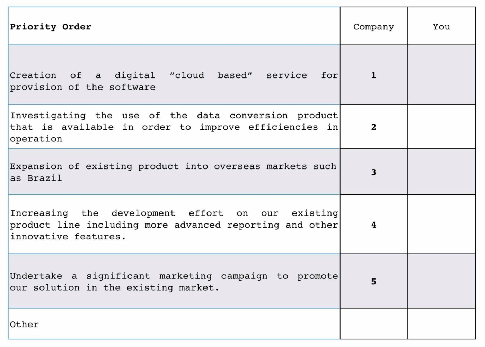
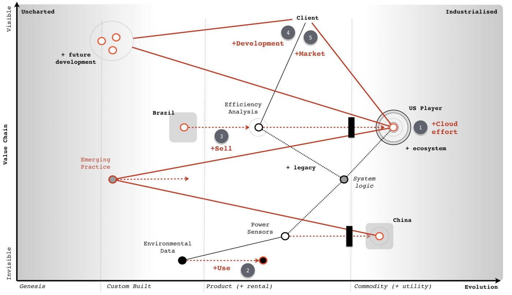
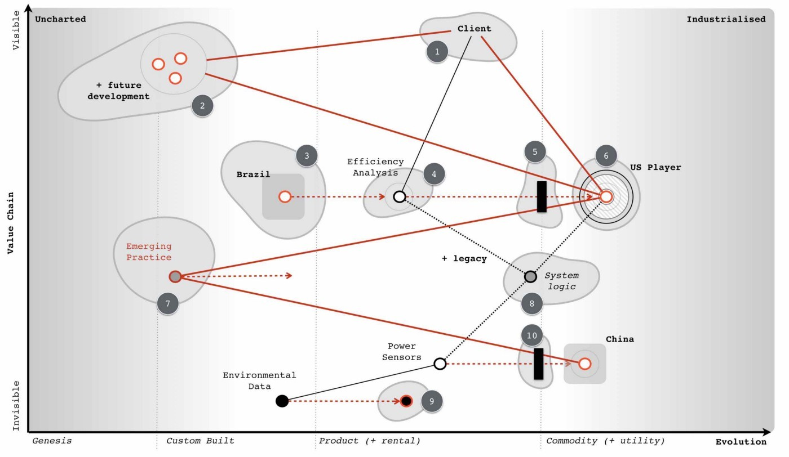
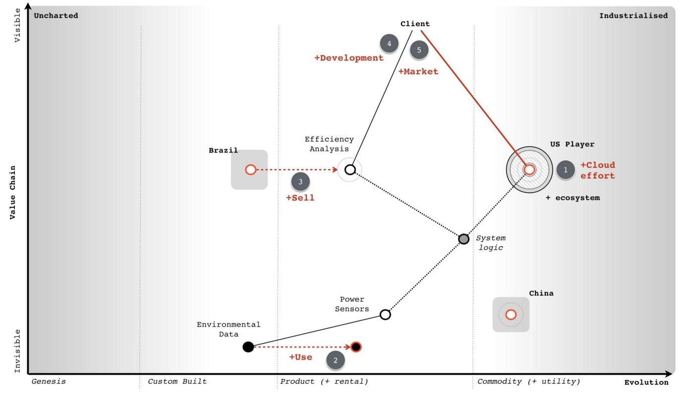
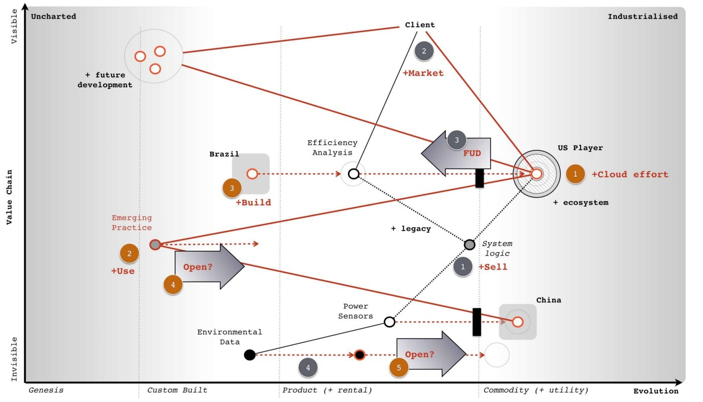
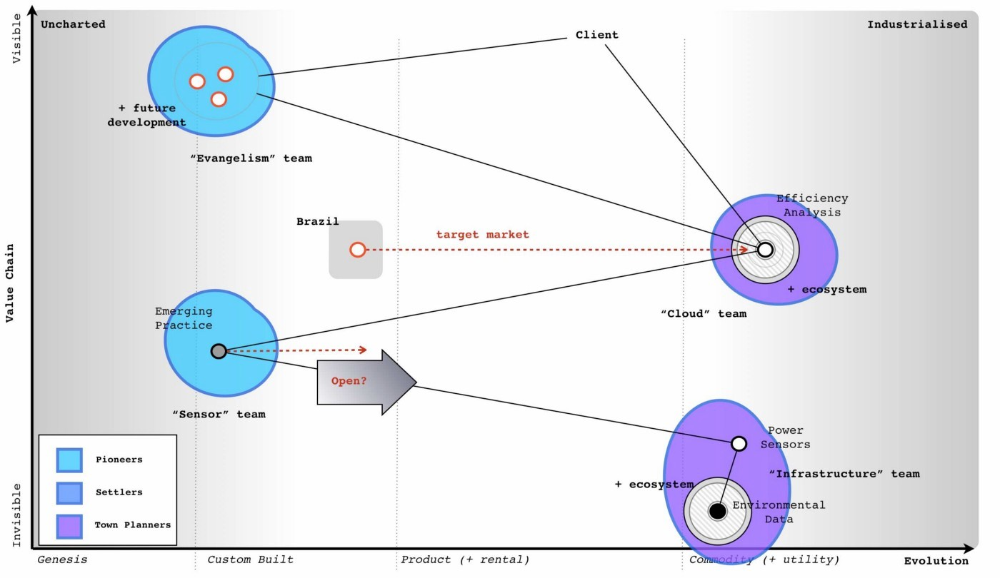
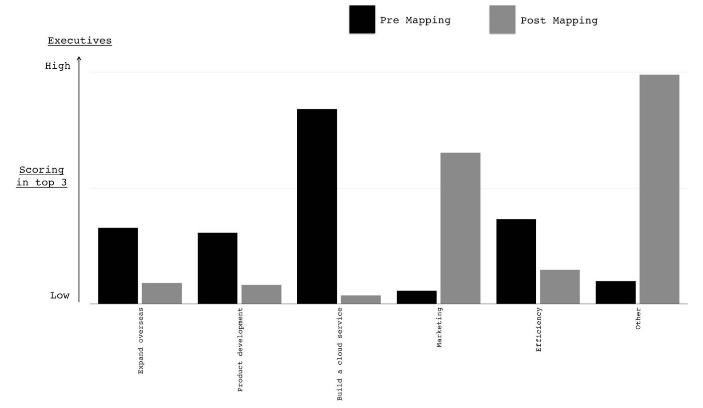

Chapter 14
12 min read
The hardest thing about mapping is coming to terms with a simple fact that there is no right answer. Mapping enables you to observe the environment, the constant flow of evolution and moves of other players but it won’t tell you what to do. There are alas no simple steps for you to follow to success. There are no plans that guarantee to bring you a fortune. I face this obstacle regularly when companies ask “how will mapping benefit me” to which the answer that “it depends upon what you observe and then what you do” is seldom welcome. They often want the concrete, the definite and a world of levers you can pull or buttons you can press. I long to say “By turning this mapping dial you will save 12% of costs” or “press the mapping button to increase your rates of successful innovation by 34%” but it just isn’t true. The benefits are context specific and they depend upon you.
The journey of mapping is one of abandoning the simple mechanistic world and embracing an iterative path of learning. Yes, there are patterns we can learn. Yes, there are universal principles we can apply. Yes, there exists context specific gameplay. Despite this and in spite of our ability to observe the environment, it is still awash with uncertainty. The uncharted is uncertain, the timing of various patterns are uncertain and the actions of others are uncertain. Even the future value of something is inversely proportional to the certainty we have over it. The more uncertain, the more risky and also the more potential value. Evolution itself, the very heart of these Wardley maps, can’t be measured over time and instead we have to measure over certainty. This use of uncertainty is an intrinsic part of learning to map but as any map shows, not everything is uncertain and even the uncertain can be exploited.
Fortunately nature has provided us the ability to cope with this, to be resilient and to learn from a constantly changing world. This ability is known as cognitive reasoning or in layman’s terms the application of thought. We can use the patterns and our understanding of the landscape to try and create a more favourable result. Sometimes we will get this right but more importantly, sometimes we will get this wrong. Every failed attempt is an opportunity to learn, assuming we use a systematic method of learning. Every mistake learned can be taught to others, assuming we use a common method of communication. There is a lot of future value in error. By learning these patterns, it helps us constrain the bewildering number of possible moves to the adjacent probable. Hence we learn that the industrialisation of artificial intelligence to commodity components and utility services will enable a rapid growth of new things built on top of it. We just can’t say what those new things will be but we can prepare for this change.
Sometimes the lessons learned from mapping are nothing more than “Ere be dragons”. This is true of the uncharted space which contains highly risky and uncertain sources of future value that require us to experiment, discover and gamble. Other times the lessons are more concrete such as the the shift from product to utility will result in co-evolution of practice. Embracing this spectrum from the uncertain to the certain, from the unknown to the known, from the uncharted to the industrialised is for many the most uncomfortable bit of the journey.
So to the exercise at hand. I will explain with maps my reasoning to the choices that I would make in this scenario. My reasoning is not the “right” answer but instead it is simply “my” answer. It maybe the case that you read this and say “I wish I’d thought of that” or maybe you have a better answer in which case I’d be delighted to learn from you. Challenge, communication, learning and embracing uncertainty are the very core of mapping.
Back in 2008, when I was faced with the situation that our scenario is very vaguely derived from, it had taken me about 45 minutes to scribble out a map on pen a paper and work through to an “answer”. In case you need a map for the scenario, I provided their chosen strategy (figure 181) and a map for on which I’ve outlined the strategy (figure 182)
Figure 181 — The Phoenix Strategy

Figure 182 — Map with strategy

As discussed in chapter 13 — Something wicked this ways comes — then I view that the strategy is about as poor as you can get. To cap it all off, the company itself has serious flaws in its makeup and composition. The CEO supported by a group of well trained executives is boldly charging the army over a cliff whilst trying to get rid of the one person who might possibly save them — the former CIO.
To work through this problem to final a possible answer then we need to first distinguish where we could attack. Even on a simple map like this then there’s lots of points we could focus on. It’s much the same with a game of chess, there’s usually a huge number of potential moves you could make. The trick is sorting out which ones are of interest and that takes experience and practice of the game. In figure 183 I’ve listed the obvious wheres on our map ignoring the more wishful thinking such as “buy up the Chinese sensor manufacturer”.
Figure 183 — the wheres

In such an map, there are always many paths. One path describes how the company thought of its future and the strategic choices it was making. It’s quite clear that the company could not see the threat of the sensors and co-evolution of practice or how dangerous the US company was or even how it had inertia to change. In all likelihood, such a company wouldn’t even understand how things evolve. In their mind, they might have an unwritten map but it’ll look more like figure 184. To this company, their strategy makes sense because they don’t understand how the landscape is changing. The commodity sensors are just a disconnected component which they believe they have choice over or the cloud is just an optional choice. They have none of the anticipation that is brought on by an understanding of climatic patterns
Figure 184 — the Phoenix map

That said, they were motivated. It’s a judgement call here as to whether an organisation can be altered in a time frame that enables you to exploit an environment. In this case, given the principles (i.e. doctrine) exhibited then I’d say not. There isn’t enough time to alter the company and go head to head with the US competitor, this is a battle better withdrawn from for now.
However, I have several secret weapons. First, the US competitor is using the same expensive sensor and they probably have their own internal inertia to change given their success in the US which means their code base will become legacy. Secondly, just because I can anticipate the future situation then that doesn’t mean the market can. From the analyst reports and interest in acquisition we know that Phoenix is seen as a bit of a star in the market. Lastly, we also have that CIO who shows some promise, some insight, despite the company’s attempt to get rid of her.
Applying a bit of thought to the map, another path now becomes available or in this case two paths as it’s a combination of simultaneous plays. I’ve marked these in orange and grey on the map in figure 185.
Figure 185 — my play

The grey play — Pig in a Poke
I’m going to sell this company (grey point 1). I’m going to want to maximise my return which means I’ll put effort into marketing (point 2) and promoting Phoenix as the future in this market, reinforcing those analyst messages. I’m also going to encourage the marketing team to heavily play on concerns over any cloud effort (point 3). Hence a bit of fear, uncertainty and doubt (FUD) is useful.
I’m not going to give up on our cloud effort, I’m just going to recommend the cloud project is cut down to less than a million and run as a prototype / experiment. I’ll also pull back on the expansion into Brazil. I want to make sure the company costs are kept down and the company is seen as attractive as possible. I’d also agree that we need to use the data product in the market and look to downsize the team in IT responsible for that. In fact, I have another purpose for them. Whilst, my fellow board members would be aware of this play, I wouldn’t explain it in this way to the executives of the subsidiary. They’d probably disagree, they have oodles of inertia and I don’t want to dampen their enthusiasm. To them, I’d explain one story which is :-
“I agree on the marketing push in our existing market and focusing on our product development. I share your concerns over the security issues of cloud and the competitor being forced to eat their own ecosystem. I wouldn’t like for us to be in that position. I’d like us to scale back on our cloud project for the time being and run a few small scale experiments. I do like the idea of entering the Brazil market but right now I think we need to concentrate on the European market, I wouldn’t want us to lose ground to the US player because we’re focused elsewhere. However, I completely agree with the efficiency drive and removing the in-house capability regarding the dataset. I also agree we should watch the Chinese sensors but our focus needs to be on building up profitability within Europe and making Phoenix soar.”
I’d also have a quiet chat with the CEO about the problem CIO and offer to move her to another group in the conglomerate in order that the CEO can focus on the task at hand. I’d suggest we have another project which could possibly do with some of those un-needed IT people as well.
My real goal here is pig in a poke, I want to maximise the capital returned through the disposal of the subsidiary. Before you state that no-one in the market would buy Phoenix then print out the the scenario (chapter 12) and try it out on a group of executives. To make your life easier, I’ve provided a link to a pdf of the scenario. If those executives don’t know how to map, they’ll probably choose the cloud, Brazil and efficiency efforts around data. If you talk to them about whether they think Phoenix has potential, then most will say yes. These are the people you’d want to be selling Phoenix to.
Whilst the grey play is all about making significant capital through a disposal of Phoenix, the orange play in the map above is all about building the future.
I do want to build that cloud service (orange point 1) but I want the technology based upon the emerging practice that will develop around the commodity sensors (point 2). I’m going to create a secret project, a separate subsidiary to do this and I’m likely to put the CIO I’ve just nabbed in charge. I also want to consider looking at driving these emerging practices to become more standard through an open approach (point 3).
I won’t be building the service in Europe but in Brazil (point 4). Firstly this is an untapped market but secondly, I want to keep out of the fight between Phoenix and the US player in Europe. Once the new service is established in Brazil and after my disposal of the Phoenix subsidiary then I’m going to look at expanding from Brazil into Europe and the US by exploiting the weakness of those competitors (i.e. their legacy code base based upon expensive sensors). For good measure, I’m going to look for another ILC type ecosystem play around data (point 5) by using an open data approach.
I’m going to be spending some time on this new subsidiary, making sure it’s setup right and we don’t get a repeat of Phoenix. I’d be looking for cell based structure, use of attitudes, FIRE, willingness to challenge and all that good stuff outlined in doctrine. To begin with, I need four basic teams (see figure 186) which I’m going to have to flesh out pretty quickly but I’d be hoping that the CIO will help me nab a few of the right people from the data group that Phoenix wants to remove.
Figure 186 — Team structure

This is how I would play the game in order to maximise the benefit for the conglomerate. The return from the disposal will vastly exceed any investment needed. I could probably use it to fund a dozen new startups whilst returning a generous reward to the conglomerate. However, this play took me 45 minutes. I’m sure with a bit of effort then a better play can be found. Maybe you have it? I am willing to learn.
The above play feels a bit “sneaky”. Remember, your focus is on what is of benefit to the conglomerate and you never know, Phoenix could have a glorious future. In cases like this, you need to put away concerns over the subsidiary and be true to yourself. Give them a chance to explore their own future in the comfort of someone else’s purse. Don’t lie to people, even the words I’ve put down for the CEO contain no lies. I’ve just omitted my own concerns which he wouldn’t share anyway. If I thought those executives might then maybe I would take a different path. Remember, the above play could be wrong, you may be selling the golden goose which is why you’d need the rest of your executive board to challenge it.
Also, it’s not “sneaky” to sell of something that you believe will head over the cliff to another. They may be able to see something you can’t and you’re not responsible for them — caveat emptor. It’s also not “sneaky” to emphasise Phoenix as the future, those analyst have been making positive noise in the scenario and maybe they’re right?
I said above that many executives would go for the cloud, Brazil and efficiency options and wouldn’t look to sell Phoenix. They would see Phoenix as having potential. How do I know this? Well, I’ve run the scenario with over 200 executives from different companies and I’ve tested their response before they could map and after. The result is shown in figure 187
Figure 187 — Response to the scenario

Before they could map, the response was always towards building the cloud service. After learning to map, the response shifted to selling the company (“other”). The interesting thing to note is the scenario has many common tools used in business — a P&L to an overview of the market — but the addition of mapping changed the response significantly. The real question to ask is how many past decisions made on those common tools would have been different had they used maps?